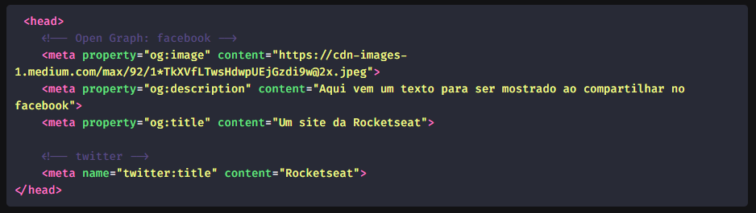

É a parte que não é visível no navegador, onde se faz configurações. Contém informações como título, links para o css, para o favicon.
As duas que são criadas automaticamente são:
É o ícone que aparece na aba do navegador. Os exemplos estão no código fonte.
SEO - Search Engine Optmization - Motores de busca, como o Google.
Esse meta diz para o robô do google o que queremos que ele faça, ele é responsável por colocar os resultados da busca , por exemplo.
É possível dizer ao robô seguir links na página, através do follow, ou o contrário com o nofollow , ou "indexar" a página, através do index, ou no index.
Existem metadados personalizados por empresas de redes sociais, como Facebook, que criou o Open Graph, que é um tipo de metadado se quisermos colocar um tipo de conteúdo especial, caso queiramos compartilhar o link da nossa página no Facebook.
São exemplos de metadados, que o Facebook procura na hora que compartilhamos a nossa página, como imagens, descrição, texto e outros.
O Twitter usa o atributo name diferente do Facebook que resolveu usar o property .
